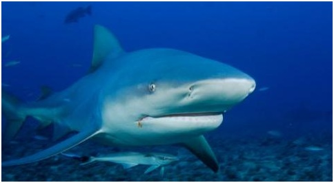

¡Bienvenido a la página sobre los Tiburones!
Los selacimorfos son un superorden de condrictios (peces cartilaginosos) conocidos comúnmente con el nombre de tiburones, también llamados escualos. Algunos grandes tiburones como el blanco y el toro, entre otros, son conocidos a veces con el nombre de jaquetones.
Existen más de 465 especies conocidas de tiburones que viven en nuestros océanos, estos peces constituyen depredadores ápices en o cerca de la parte superior de sus cadenas alimentarias marinas, y regulan las poblaciones de las especies por debajo de ellos.
Las investigaciones han demostrado que el agotamiento masivo de los tiburones tiene efectos en cascada en todo los ecosistemas del océano.